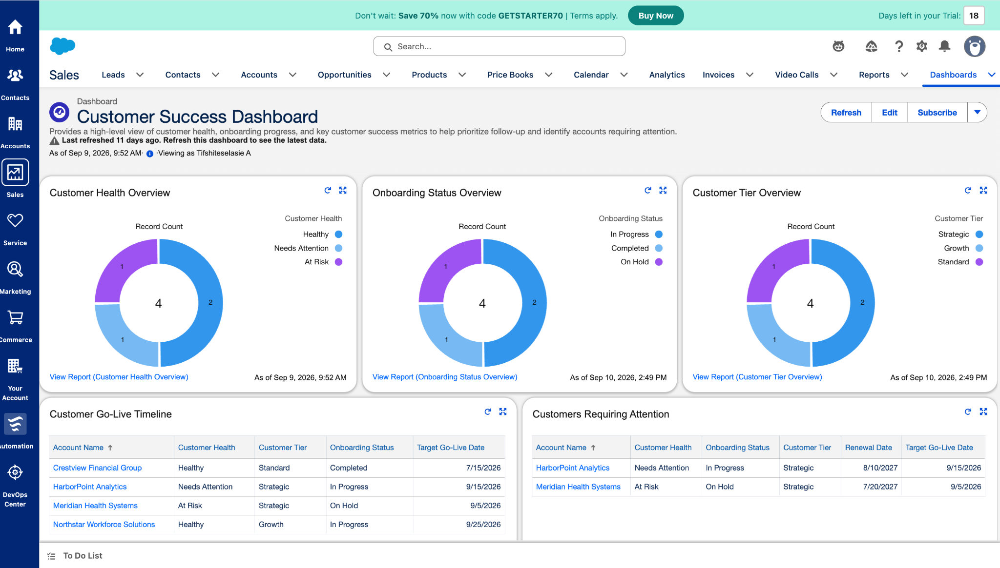

Project brief
I designed a fictional Customer Success scenario where account information, onboarding progress, health signals, milestones, and follow-up activity needed to be organized in one Salesforce workspace.
Salesforce Customer Success Portfolio
Customer Success · Salesforce CRM · Client Operations
This portfolio documents my hands-on Salesforce work and the customer-facing experience behind it. The featured project shows how I configured onboarding tracking, customer health reporting, dashboards, activities, and Flow automation in Salesforce.

Selected Salesforce Project
This project is a hands-on portfolio build created to practice and demonstrate how Salesforce can support a Customer Success workflow across onboarding, adoption, account health, milestones, follow-up, reporting, and automation.
I designed a fictional Customer Success scenario where account information, onboarding progress, health signals, milestones, and follow-up activity needed to be organized in one Salesforce workspace.
I extended Accounts with Customer Success fields, created customer and contact records, logged activities, built operational reports and a dashboard, and added a record-triggered Flow for at-risk follow-up.
The finished project demonstrates practical CRM organization, reporting, dashboard design, lifecycle tracking, and workflow automation using fictional data in Salesforce Lightning.
Project Artifact · Dashboard
The dashboard combines a high-level health view with account-level detail, so a Customer Success professional can quickly move from “what is happening?” to “who needs attention next?”
Customer Health
Healthy, Needs Attention, and At Risk distribution.
Onboarding Status
In Progress, Completed, and On Hold accounts.
Customer Tier
Strategic, Growth, and Standard segmentation.
Go-Live Timeline
Target dates and onboarding status at account level.
Customers Requiring Attention
Filtered view for proactive intervention.
Project Artifact · Reports
The reports are intentionally simple and operational. They help answer questions a Customer Success team asks every day: Which accounts are healthy? Which ones are stuck? Which milestones are coming up? Who needs follow-up?
Project Artifact · Automation
I created an active record-triggered Flow that responds when an Account's Customer Health changes to At Risk.
Detect
Account is updated and meets the At Risk entry condition.
Create
A high-priority follow-up Task is generated.
Assign
The Task goes to the Account Owner and relates back to the Account.
Time-box
Due date is set three days after the account becomes At Risk.
Salesforce Build Details
The Account object was extended with fields that make customer success work visible and reportable.
All customer names, contact details, and records shown in this portfolio are fictional demo data created for learning and portfolio purposes.
Professional Background
My background combines high-touch customer service, team coordination, stakeholder communication, training, and data-driven problem solving. This project translates those strengths into a Salesforce Customer Success workflow.
U.S. Navy Child Development Center
OGAA · Remote, Volunteer
Ethiopian Airlines
Portfolio Skills
Credentials
Udemy · 2025
Ongoing learning and hands-on practice
2024
Udemy · 2024
Debre Berhan University
Contact
I am pursuing Customer Success and Salesforce-focused opportunities where I can bring together customer communication, organized follow-up, problem solving, and CRM skills.